公共事業等に伴い新たに基準点が必要となった際に、既知点に基づき、新点の位置を定める作業のことで、あらゆる事業を行う際の根幹となる測量です。 したがって非常に高い精度を求められるため、弊社では高精度なトータルステーションを用いて測量を行います。
VRS観測は、仮想基準点方式（Virtual Reference Station)の略です。GNSS測量機1台で全国の国土地理院電子基準点データを民間の計算センタ-を通じてリアルタイムに受信して観測を行います。短時間で高精度なデータを取得できるため、弊社では対象となる現場条件に応じてご提案させていただきます。
水準測量は、主に地点の標高や高低差を求めるための測量です。 レベルと標尺を用いて２点間の高低差を高精度に求める測量です。
縦断測量とは、一定線上(各点)の高低と起点からの水平距離により勾配を求めることで縦断面図を作成する測量のことです。
横断測量とは、縦断測量で打ち込んだ(一定直線の)杭位置に対し、直角方向の地盤高低を求める測量のこと。
深浅測量は、河川、海岸等の維持管理および調査等のために必要な水底部の状況を測定するもので、水面を基準にして測深位置と水深とを同時に測定し、水底部の地形を明らかにするため、横断面図を作成する作業です。
TS平板測量はトータルステ－ションを用い地形状況を測てした測点を図面上に展開して結ぶことで平面図を作成する作業です。
地上レーザ－スキャナ－測量は広範囲をスキャニングして３D点群データを取得します。このデ-タを基に平面図、縦横断図、土量計算に利用します。また災害時の崩落地や高速道路上の測量などで、作業員が危険場所でなく安全な所で高精度な作業が行えます。
路面変位調査は道路の舗装面を所定のメッシュ（格子状）に平面上の定点を定めその高さを定期的に測定し、沈下や隆起といった路面変状を把握することで道路維持管理に役立て、安心安全に道路を利用していただくための調査です。
橋梁部沈下調査は橋梁のピアに鋲などの定点を定め水準測量により沈下または隆起といった変動を定期的に観測して経年変化を確認することで橋梁の維持管理計画に利用することを目的とする調査です。
トンネル内空変位調査はトータルステ－ションや3Dレーザ－スキャナ－うを用い定期的に内空断面を測定比較することで経年変化を確認し、維持管理計画の資料とする作業です。
道路上での事故等により油等が路面に流出した時に流末排水系統を把握しておく事で河川等に放出する前に迅速に処理対応できる資料を作成する。
リキュールを使ったカクテルでおなじみのカシスは、ポリフェノールやビタミンが豊富なベリー系のフルーツです。オレンジとともにジューサーにかけて、爽やかなドリンクに仕上げました。
¥480-


 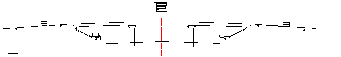
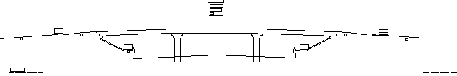
 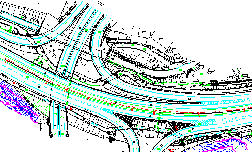
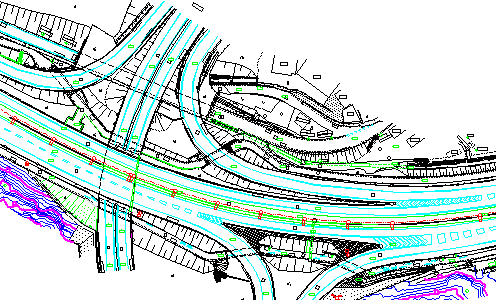
 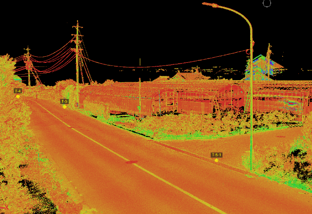
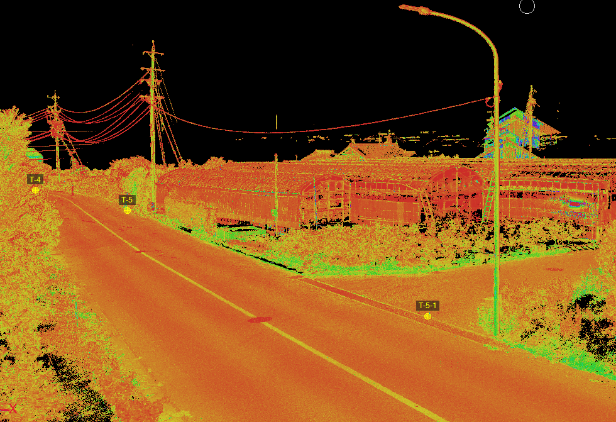


 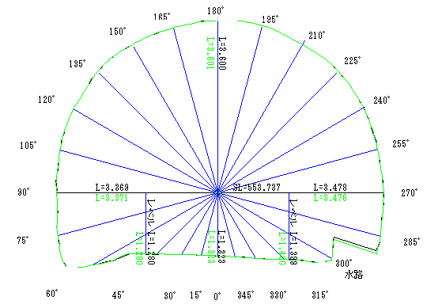
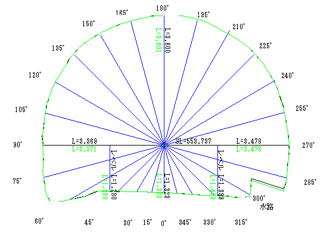
 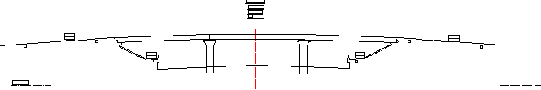
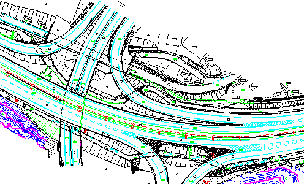
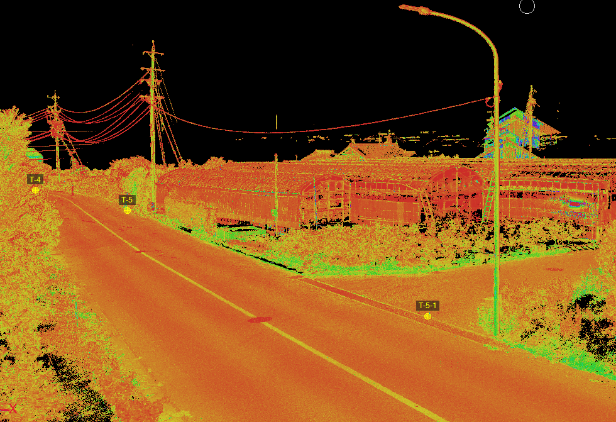
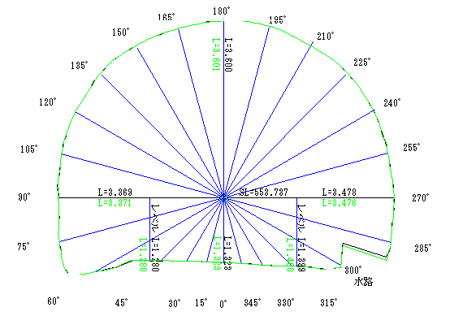
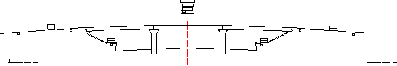
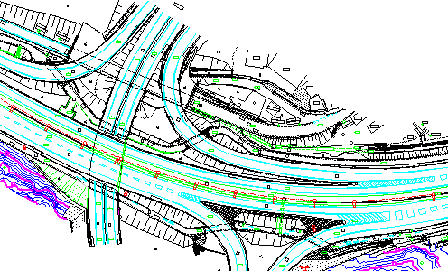
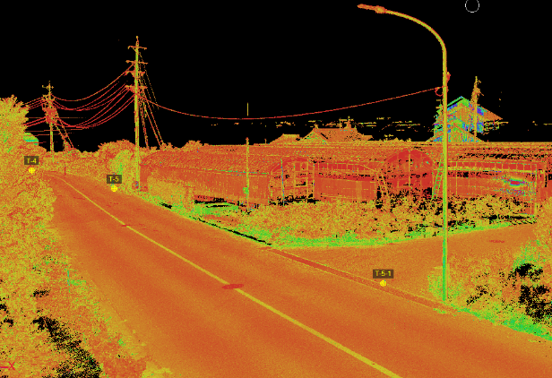
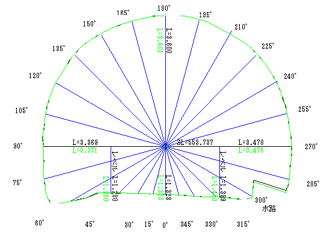